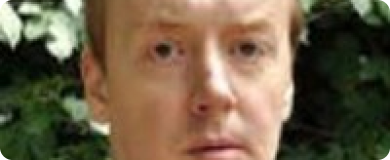

Почему историк такой душнила?

На наших исторических семинарах у нашего преподавателя часто возникает проблема с тем, что его вопросы кажутся непонятными и невразумительными. Он часто задает загадочные вопросы, оставляя студентов в замешательстве и не дающие возможности ответить осмысленно. К тому же, его методика преподавания порой кажется слишком монотонной и невдохновляющей.